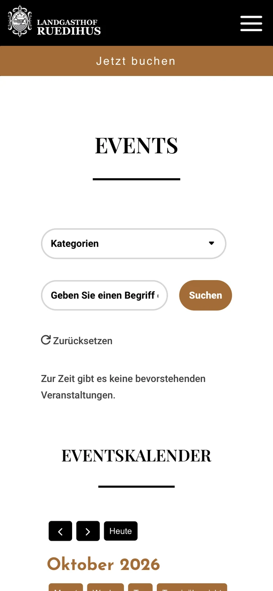
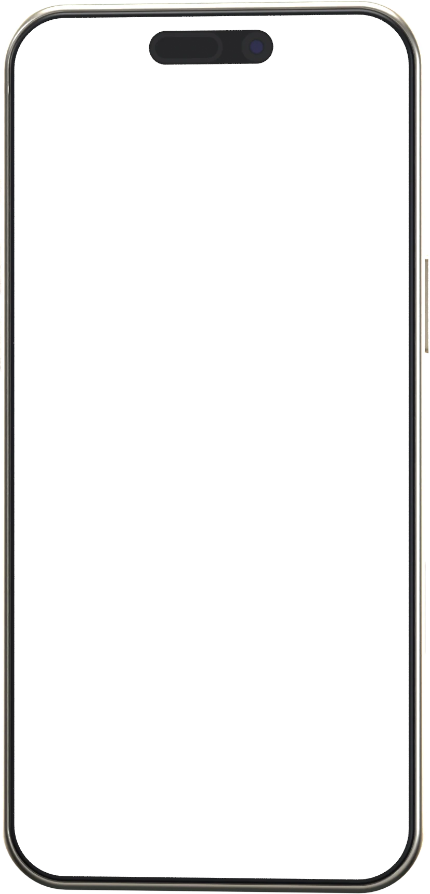
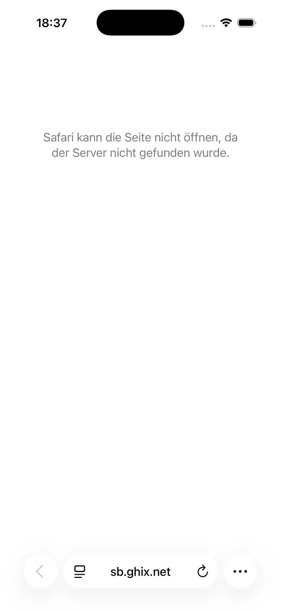
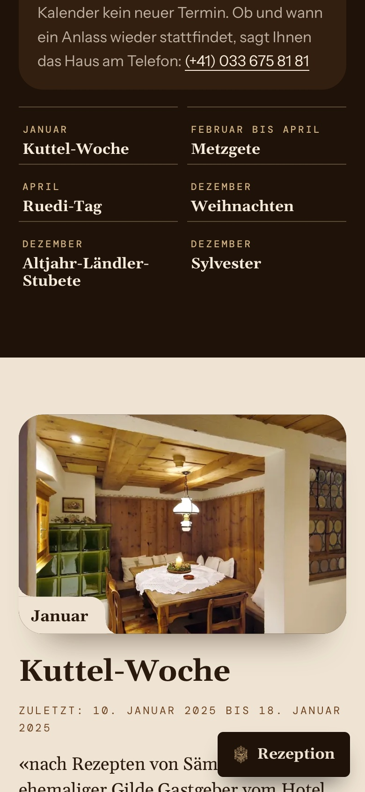

01Reservieren
Auf der Events-Seite führt «Jetzt buchen» zu einer Adresse, die es nicht mehr gibt
Der Knopf «Jetzt buchen» oben auf der Events-Seite führt zu einem früheren Buchungsdienst, den es nicht mehr gibt. Wer dort tippt, sieht keine Seite.
So ist es heute



Belegt
- Ziel des Knopfs:
https://sb.ghix.net/Login.aspx?HotelID=2773340&view=Superbooking1&Language=2. Die Abfrage des Namenssb.ghix.netergibt am 16. Oktober 2026 «not found» (NXDOMAIN). - Der Knopf steht auf 63 von 96 Adressen der Sitemap: auf allen Seiten mit Veranstaltungen beider Häuser, darunter die elf Anlass-Seiten des Ruedihus, und auf der Events-Seite des Ruedihus in allen sechs Sprachen. Auf den übrigen Seiten führt «Jetzt buchen» zu
simplebooking.it/ibe2/hotel/11517. (Zwei Anlass-Seiten haben wir im Quelltext geprüft; er enthält denselben Knopf.)
Aufgenommen am 16. Oktober 2026 auf doldenhorn-ruedihus.ch/ruedihus
Für Ihre Gäste
Wer bei den Anlässen Lust auf einen Besuch bekommt und gleich ein Zimmer sucht, kommt an dieser Stelle nicht weiter und muss den Weg zur Buchung selbst suchen.
Für Ihr Haus
Genau dort, wo Ihre Anlässe Lust auf einen Besuch machen, führt der Knopf ins Leere.

So im Entwurf
Jeder Anlass steht mit seinem Monat und seinem Menu da, und der Knopf fragt direkt einen Tisch an.
Im Entwurf ansehenSelbst nachsehenAuf der Events-Seite oben auf «Jetzt buchen» tippen. Events-Seite